Tortured time looper who also happens to be a grade schooler.
General Information - Who is Hayato Kawajiri?
Hayato Kawajiri is a secondary protagonist from the fourth part - Diamond is Unbreakable of the series Jojo's Bizarre Adevnture by Hirohiko Araki. Hayato first appears in the arc Yoshikage Kira's New Life and becomes a more important character in the Bites The Dust arc.
Hayato Kawajiri is an 11 year old who lives in the fictional city of Morioh with his mother, Shinobu, and his father, Kosaku. He is commonly seen as a "creepy kid" and has cameras around his home, but he is also exceptionally brave and stubborn in the face of adversity.
Plot Summary
Hayato is introduced after the main villian of the story, Yoshikage Kira, steals the face of his real father, Kosaku, and begins living as him. Hayato begins to suspect his father was swapped after his mother starts to show interest in his father again, as well as Kira doing odd things like practising Kosaku's signature and switching out his shoes with ones that would fit better.
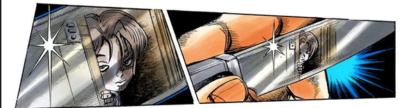
One day, Hayato notices Kira bringing potting soil and cat food up to the attic, and decides to investigate. In the attic he finds Stray Cat, which is a cat who died and became a palnt and can shoot air bullets using a magic power called a Stand. (Stands are the manifestation of one's fighting spirit. Hayato and his mother are not Stand users, but Kira is.) While investiaging, Kira realizes Hayato is not heading to school and nearly catches him in the attic. He doesn't, but threatens to kill Hayato if Hayato continues to poke into his buisness.
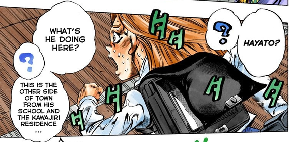
Hayato's suspicion only grows, and after school he decides to follow Kira to see where he is going after work. While he does this, he witnesses Kira murder two people and records it on camera. He then runs home, but Kira spots him. Later that night Kira corners Hayato while Hayato is having a bath and tries to intimidate the incriminating recording from Hayato.
This fails and in a panic Kira accidentally kills Hayato. While Kira is trying to figure out how to hide the body, Kira's father (who is a ghost in a photograph) comes to help. Kira is accidentally stabbed with an arrow that is usually used to give someone a Stand, but since Kira already has a Stand it simply gives him another ability - Bites The Dust.
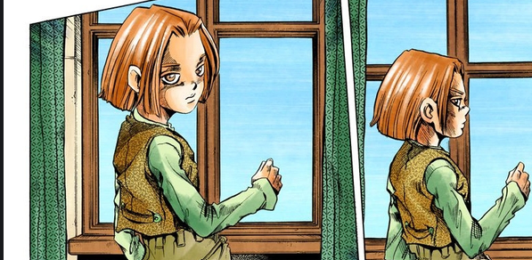
Hayato wakes up the next moring with no knowledge of his own death, as it has been erased, as far as hayato is concerned Kira doesn't know he has the evidence. Kira is acting far more relaxed this morning and is far more affectionate with Shinobu, which really upsets Hayato. Kira then insists on walking to school with Hayato and is now insisting on them being a "happy family" before leaving Hayato alone. Hayato doesn't know this, but someone named rohan Kshibe has been looking into him and has roped his friends (Josuke, Okuyasu, Koichi, and Jotaro) into meeting with Hayato to try and find Kira. Kira is a serial killer I should probably mention that.
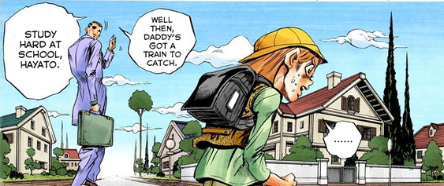
Rohan stops Hayato and uses his Stand to open Hayato like a book to read what Hayato knows. For some reason, Hayato seems to know events that haven't happened yet. Rohan eventually reads "My dad is not my dad -> My dad is Yoshikage Kira." Which causes the ability that was stored inside Hayato to trigger and explode Rohan.
Hayato wakes up in time to see Rohan die, then his day restarts. Hayato thinks he just had a bad dream, but Kira begins to gloat and ask who Hayato had eliminated for him before telling him that anything that happens in a previous loop will repeat in each one - a tea pot that breaks in one loop will break in all subsequent ones, and soemone who dies will die in every loop. Kira also reveals that anyone who tries to get any information out of Hayato in any way about Kira will explode. They watch Rohan die together before Kira leaves Hayato again.
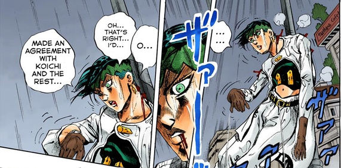
Hayato is then accosted by Josuke, Okuyasu, Koichi and Jotaro. All four of them chalk Rohan's absence up to him being late. After realizing Hayato is in fact the kid they are looking for, they try to interrogate him. Hayato first tries to hit his nose so it bleeds, but Josuke uses his healing ability to fix it instantly. As the group gets more insistant, Hayato begins to panic and attempts to slash his throat to avoid anyone else dying. Unfortunately this fails as Bites the Dust immediately protects Hayato and the group die while Hayato can go nothing.
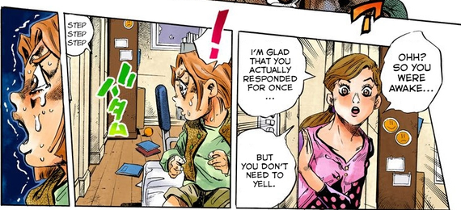
Hayato is completely overcome with despair - he can't die and he can't save anyone, and it feels like Kira will win once and for all. Still, pushed to this limit, Hayato resolves to kill Kira. He goes to the attic to get Stray Cat, knowing that it is very powerful, and plans to wait until Kira comes to gloat to shoot him point blank! Kira unfortunatly picks up on Hayato's plans, and hides behind a tree. He does eventually drop his guard since he thinks Hayato is completely defenceless and comes out, and Hayato can finally attack. The attack doesn't land, however, as Kira had a broken watch in his pocket. Hope is not lost, however, because using his knowledge from the previous time loops he had the foresight to call Josuke so Josuke could hear Yoshikage Kira reveal his identity himself.
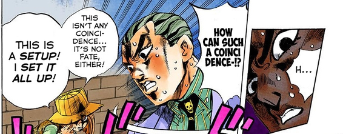
Josuke and Kira engage in combat, and they seem to be winning until Kira reveals that Hayato gave him the advantage by bringing Stray Cat to him, and he uses Stray Cat's ability to create projectile bombs and Okuyasu is killed. After a small struggle, Josuke can finally get to Okuyasu's body. Hayato pleads with Josuke not to touch the body since during the struggle, since he has learned to read Kira's emotions well and knows Okuyasu's body is now a bomb. He touches Okuyasu's body and lets himself explode, and Josuke fixes him right when he explodes so Hayato survives.
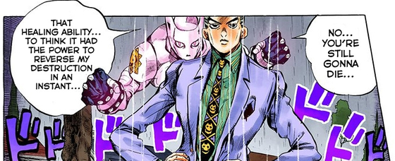
Okuyasu isn't saved and Josuke is trying to drag Okuyasu along with him, which Hayato pleads with Josuke to not do so as Kira is still pursuing them. Josuke ends up using his ability to bring all three of them further down the sidewalk (by fixing a piece of sidewalk in his back to where it was once in the sidewalk) and takes Hayato to hide in a house.
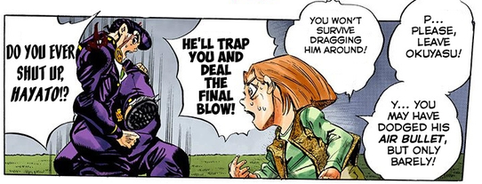
Kira is still attacking them in the house by using Stray Cat's air bullets, but neither Josuke nor Hayato can figure out how Kira knows where they are in the house. Josuke figures it out after a few attacks, and asks Hayato to come closer so he can set Hayato's vest on fire to get Kira's father out of his pocket - Kira had been getting directions from his father over the phone. Josuke tricks Kira into blowing up his father, and finally Kira is completely at a disadvantage. Josuke and Kira fight again, and when all seems lost it is revealed that Okuyasu came back to life. Okuyasu helps redirect the air bullets and finally Kira is nearly completely powerless.
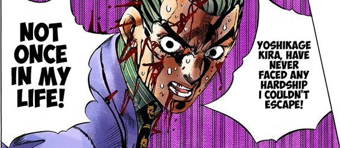
Kira is finally caught and cornered in the middle of a road. Since he is injured, a nurse comes to help him. Hayato begins to panic as Kira can now create a new time loop, dooming everyone, but after some convincing from Rohan, Jotaro stops time and punches Kira so hard he lands under the wheel of a ambulance. Hayato watches as his father's face is ripped off of Kira. After everything, Hayato mourns the fact that even if Kira is dead, his father will never get justice.
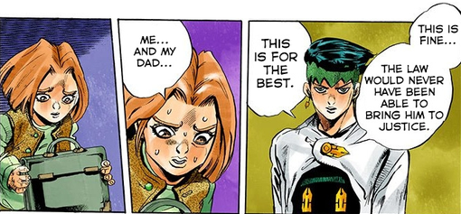
The last time we see Hayato, he is at the dinner table with his mother. Shinobu says she is going to wait for Kosaku to get home to eat, and Hayato tearfully says he'll stay up with her. Shinobu is suprised by this, and mentions Hayato has gotten taller.
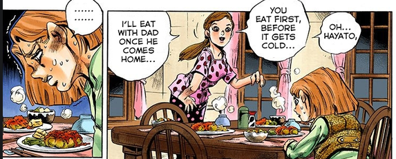
Important Relationships
Shinobu Kawajiri - Mother
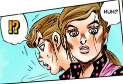
Shinobu is a bit harsh on Hayato since she is seen chastizing him a lot and he doesn't talk to her a lot. She does seems to care about her son, but she is very bored of both him and her husband so she isn't overly engaged with her son. Hayato does want to protect her, however, and is visibly upset when Kira starts getting too close to her.
Kosaku Kawajiri - Father
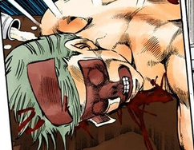
It is unclear exactly how Kosaku treated his son since he is dead on his first introduction, but Hayato mentions he was never close to his father. Hayato wishes his father had some justice and mourns him later.
Yoshikage Kira - "Father"
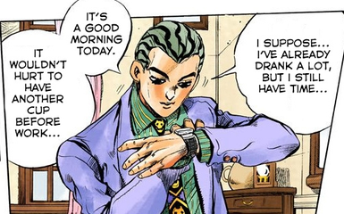
Hayato is the only person to pick up on the fact Yoshikage Kira has taken over his father's life due to his perception. Kira hates Hayato for getting in the way and disturbing his peaceful life, and Hayato hates Kira for threatening him and his mother. Kira mostly doesn't talk to Hayato until Hayato is the center of his time loop, he enjoys gloating to Hayato and making fun of his torment. Kira does seem to enjoy having power over Hayato. Hayato just really wants Kira to be brought to justice.
Josuke Higashikata (and friends) - Allies
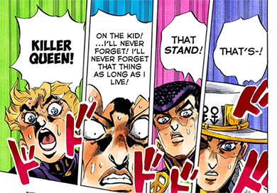
Josuke Higashikata is the main character of Diamond is Unbreakable and thus is present for the final showdown, but also dies once in the time loop. With the help of Hayato, Josuke manages to incapacitate Kira. Josuke is really the only member of the main cast that really interacts with Hayato. Hayato does watch Rohan Kishibe die directly twice and is shaken by it, and also watches Okuyasu Nijimura die twice and has to convince Josuke to leave Okuyasu behind to save himself - Okuyasu is later fine and not dead, of course. Hayato never actually talks to Jotaro Kujo, but briefly talks to Koichi Hirose before the entire group explodes.
Stray Cat/Catgrass - Ally/Enemy
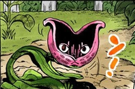
Hayato attempted to use Stray Cat to kill Kira, but it failed and Stray Cat was turned against him. Stray Cat is naturally very ornary so does attack Hayato as well as the rest of the main cast. Hayato does call her Catgrass instead of Stray Cat. This is evidence Hayato is cute.
Personal Notes
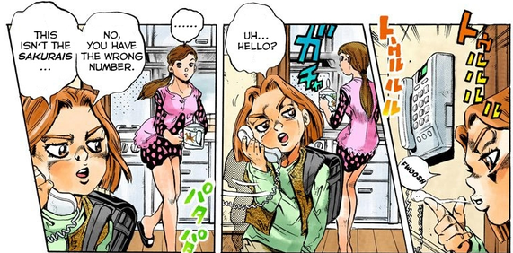
Hayato has been my favourite Jojo's Bizarre Adventure character for almost a year now because his story is so facinating to me. Hayato is completely powerless against Kira and he is aware of this almost the whole time, but still attepts to stop Kira by himself. The pure horror of being harmed by someone and having no way to tell anyone or to get help is all too real and it is done very well with Hayato. I also personally get very attached to child characters, and Hayato is only 11 when all these horrible things happen to him. I also think he is unintentionally very good autism representantion as he is often seen as "creepy" but in reality he is just very quiet and sees the world through the lens of recordings and cameras and thus is a bit detached from other people. He is also very focused on justice and is very dead set on things. All in all he is a very interesting character!